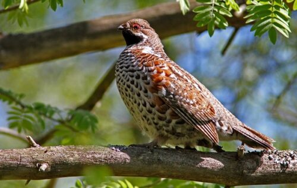

Орябок лісовий, або орябок — вид невеликих птахів родини Фазанові. Дуже широко поширений в північній половині Європи і по всій сибірській тайзі, один з найхарактерніших лісових птахів. Цей птах розмірами лише дещо більший від голуба. Вага коливається від 330 до 580 г. Довжина тіла 35—37 см. Це осілий вид, літає мало, воліючи бігати по землі. Злітає з шумом, переміщаючись на невеликі відстані. Тримається зазвичай парами або зграйками.

Ареал виду та його поширення в Україні: Ареал охоплює деякі райони (насамперед гірські) Європи, Кавказу та Закавказзя, Малої та Центральної Азії, Казахстану, Сибіру, Китаю та Монголії. В Україні зустрічався у деяких районах Полісся, Карпат, Поділля, Криму та ін. Поширення виду на теперішній час в Україні невідоме.
Чисельність і причини її зміни: Чисельність невідома, за останні 20 років в Україні достеменно задокументованих знахідок немає. Можливі причини зникнення в Україні: руйнування місць перебування виду (вирубування природних розріджених лісів, насадження деревних монокультур), зміни у структурі землекористування, рекреаційне навантаження, застосування пестицидів тощо.
Ареал виду та його поширення в Україні: Поширений на більшості території Європи (крім пн. регіонів), на Кавказі та у Малій Азії. В Україні поширення обмежене зх. областями (форма alcathoe) та приморськими степами і Гірським Кримом (aurascens).
Чисельність і причини її зміни: Вкрай низька, в Україні відомо лише близько 30–50 місцезнаходжень, і частка виду в населенні кажанів звичайно складає до 1%, проте на Поділлі вона зростає до 10% і найбільшою є в Причорномор’ї (до 40%). Загальний розмір популяції можна оцінити у 10–30 тис. особин.
Причини зміни чисельності: втрата біотопів і масштабні санітарні рубки, спрямовані на знищення дуплистих дерев.

Це один з найхарактерніших видів бабок Степової зони. Личинки надають перевагу слабопроточним водоймам, струмкам з повільною течією, проточним озерам, озерам у заплавах річок. В горах піднімається лише до висоти 500 м. Личинка дуже чутлива до чистоти води і не переносить її забруднення. Самиця відкладає яйця, кидаючи їх у воду, і лише зрідка біля врізу води у мокрий мул. Личинки розвиваються приблизно 1 рік. Виплоджуються дорослі бабки над водою, на травинках, що стирчать з води, на висоті не більше 10 см. Літ — у другій половині літа та у першій половині осені. Політ слабкий, порхаючий, бабки не можуть активно протистояти вітру і шукають затишний притулок. Цей вид може бути індикатором якості води у водоймах.

Вона поширена в таких країнах, як Вірменія, Азербайджан, Бельгія, Боснія і Герцеговина, Болгарія, Хорватія, Чехія, Грузія, Німеччина, Греція, Угорщина, Іран, Ірак, Ізраїль, Італія, Ліван, Ліхтенштейн, Люксембург, Молдова, Нідерланди, Румунія, Росія, Сербія і Чорногорія, Словаччина, Словенія, Туреччина, Україна, можливо, Албанія, Австрія, Північна Македонія, Польща і Швейцарія.
Вподобання середовища існування цього виду різняться в різних частинах його географічного ареалу — населяє вологі місця, кам'янисті місця, гори, відкриті сільськогосподарські ландшафти, сади й приміські чи міські райони, сухі степові місця.